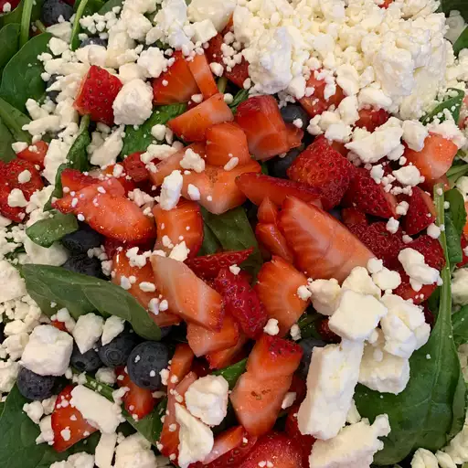

Strawberry Spinach Salad

Description
Strawberry Spinach Salad is the perfect summer snack! Refreshing, tangy, and delicious, nothing beats snacking on this salad during a hot day.
Ingredients
Dressing:
- 1/2 cup white sugar
- 1/2 cup olive oil
- 1/4 cup distilled white vinegar
- 2 tablespoons sesame seeds
- 1 tablespoon poppy seeds
- 1 tablespoon minced onion
- 1/4 teaspoon paprika
- 1/4 teaspoon Worcestershire sauce
Salad:
- 1 quart strawberries - cleaned, hulled, and sliced
- 10 ounces fresh spinach - rinsed, dried, and torn into bite-size pieces
- 1/4 cup almonds, blanched and slivered
Steps
- Make dressing: Whisk together sugar, oil, vinegar, sesame seeds, poppy seeds, onion, paprika, and Worcestershire in a medium bowl. Cover and chill for 1 hour.
- Make salad: Combine strawberries, spinach, and almonds in a large bowl.
- Pour dressing over salad; toss to coat. Refrigerate for 10 to 15 minutes before serving.